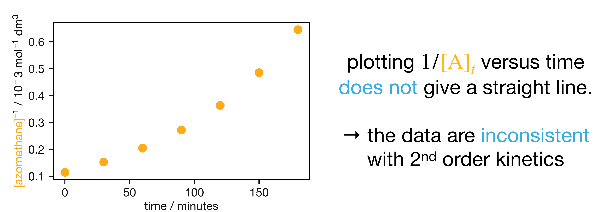

Lecture 3 Methods for Determining Rate Laws from Experimental Data
Different reaction mechanisms predict different rate laws. If we can determine the rate law from experimental data, we gain direct information about the microscopic mechanism — the sequence of molecular events that makes a reaction happen. But how do we carry out this analysis systematically? And what do we do when a reaction involves more than one reactant? We have already seen that each reaction order gives a different linear form when we plot concentration–time data appropriately. Here we develop this idea into a complete toolkit of four complementary methods for extracting rate laws from experiment.
3.1 The Integral Method
The integral method is the most direct approach. Given concentration–time data for a reaction, we plot the data in each of the linear forms from the summary table and look for the plot that gives a straight line. The order of that straight-line plot tells us the reaction order; the slope gives the rate constant.
| Order | Linear plot | Slope |
|---|---|---|
| 0 | \([\mathrm{A}]\) vs \(t\) | \(-k\) |
| 1 | \(\ln[\mathrm{A}]\) vs \(t\) | \(-k\) |
| 2 | \(1/[\mathrm{A}]\) vs \(t\) | \(+k\) |
3.1.1 Worked Example: Azomethane Decomposition Revisited
We can illustrate this with the azomethane decomposition data from the previous chapter:
| \(t\) / min | 0 | 30 | 60 | 90 | 120 | 150 | 180 |
|---|---|---|---|---|---|---|---|
| \([\mathrm{azomethane}]\) / \(10^{-3}\,\mathrm{mol\,dm}^{-3}\) | 8.70 | 6.52 | 4.89 | 3.67 | 2.75 | 2.06 | 1.55 |
Plotting \(\ln[\mathrm{azomethane}]\) against \(t\) gives a straight line with slope \(-k = -9.6 \times 10^{-3}\,\mathrm{min}^{-1}\), consistent with first-order kinetics. But to be rigorous, we should also check that the data are not consistent with the other candidate rate laws. Figure 3.1 shows the result of plotting \(1/[\mathrm{azomethane}]\) against \(t\): the data clearly curve, ruling out second-order kinetics.

Figure 3.1: The azomethane decomposition data plotted as \(1/[\mathrm{azomethane}]\) versus time. The curvature indicates that these data are not consistent with a second-order rate law.
This is the essence of the integral method: we test each candidate rate law in turn and reject those that do not give a straight line. A linear plot both confirms the reaction order and provides the rate constant from the slope. If none of the standard plots gives a convincing straight line, the reaction may have a non-integer order or a more complex rate law — situations we will encounter when we study reaction mechanisms.
You should be able to: Apply the integral method to concentration–time data: plot in the appropriate linear forms, identify which (if any) gives a straight line, and extract the rate constant from the slope.
Aside: Modern Analysis Methods
While we have focused on linear transformations, modern computational methods allow direct non-linear fitting of the integrated rate laws in their original (non-linearised) form. The linear analysis method remains the standard approach in most textbooks, however, and has the practical advantage that it can be applied with nothing more than graph paper and a ruler — or in an exam.
3.2 The Half-Life Method
The integral method requires plotting the data and fitting a straight line. But is there a way to test for first-order kinetics just by inspecting the numbers? There is, and it rests on a unique property of exponential functions. For a first-order reaction, the integrated rate law gives:
\[[\mathrm{A}]_t = [\mathrm{A}]_0\,\mathrm{e}^{-kt}\]
What does this exponential decay actually look like? Suppose we start with a concentration of 100 (in arbitrary units). After some time interval, the concentration has dropped to 50. After the same interval again, it drops to 25, then to 12.5, and so on. In each interval the concentration halves — it decreases by the same fraction, not by the same amount. This is fundamentally different from zeroth-order kinetics, where a fixed amount is consumed per unit time (100, 90, 80, 70, …). For first-order kinetics, we multiply by a constant factor; for zeroth-order, we subtract a constant amount.
We can show this algebraically. The ratio of the concentration at two times separated by a fixed interval \(\Delta t\) is:
\[\frac{[\mathrm{A}]_{t+\Delta t}}{[\mathrm{A}]_t} = \frac{[\mathrm{A}]_0\,\mathrm{e}^{-k(t+\Delta t)}}{[\mathrm{A}]_0\,\mathrm{e}^{-kt}} = \mathrm{e}^{-k\Delta t}\]
The initial concentration \([\mathrm{A}]_0\) cancels, and so does \(t\) itself. The ratio depends only on \(k\) and \(\Delta t\) — not on when we start measuring or how much reactant remains. Constant proportional change over equal time intervals is the signature of an exponential, and therefore of first-order kinetics. No other functional form has this property.
The special case where the concentration falls to one-half gives us the half-life (\(t_{1/2}\)): the time taken for the concentration to fall to half its current value. Setting \([\mathrm{A}]_t = \frac{1}{2}[\mathrm{A}]_0\):
\[\frac{1}{2}[\mathrm{A}]_0 = [\mathrm{A}]_0\,\mathrm{e}^{-kt_{1/2}}\]
\[\frac{1}{2} = \mathrm{e}^{-kt_{1/2}}\]
Taking the natural logarithm of both sides:
\[\begin{equation} t_{1/2} = \frac{\ln 2}{k} \tag{3.1} \end{equation}\]
Notice that \(t_{1/2}\) depends only on \(k\), not on \([\mathrm{A}]_0\). The half-life is constant: it takes the same amount of time for the concentration to halve whether we start from \([\mathrm{A}]_0\) or from any later concentration. This is a defining characteristic of first-order kinetics.
But there is nothing special about the factor of one-half — it is simply a convention. If the concentration falls to 0.75 of its value in the first 30 minutes, it falls to 0.75 again in the next 30 minutes, and the next, and so on. We could define a “three-quarter-life” from this just as easily. More generally, for a first-order reaction, the time taken for the concentration to fall to any fixed fraction \(1/n\) of its current value is:
\[\begin{equation} t_{1/n} = \frac{\ln n}{k} \tag{3.2} \end{equation}\]
This depends only on \(k\), not on the concentration. Whether we measure a half-life, a quarter-life, or any other fixed-fraction decay time, the result is the same every time we measure it — and this is true only for first-order kinetics.
3.2.1 Worked Example: Azomethane Revisited
We can use this as an independent check on the azomethane data. Looking at the ratio of successive concentrations, each measured at 30-minute intervals:
| Interval | \([\mathrm{azomethane}]_\mathrm{start}\) | \([\mathrm{azomethane}]_\mathrm{end}\) | Ratio |
|---|---|---|---|
| 0–30 min | 8.70 | 6.52 | 0.75 |
| 30–60 min | 6.52 | 4.89 | 0.75 |
| 60–90 min | 4.89 | 3.67 | 0.75 |
| 90–120 min | 3.67 | 2.75 | 0.75 |
| 120–150 min | 2.75 | 2.06 | 0.75 |
| 150–180 min | 2.06 | 1.55 | 0.75 |
The constant ratio of 0.75 confirms first-order kinetics — without plotting a single graph. We can also extract \(k\) from these data. The concentration falls to \(0.75 = 3/4\) of its value every 30 minutes, so in the notation of Eqn. (3.2), \(1/n = 3/4\), giving \(n = 4/3\) and \(\Delta t = 30\,\mathrm{min}\):
\[k = \frac{\ln(4/3)}{30\,\mathrm{min}} = 9.6 \times 10^{-3}\,\mathrm{min}^{-1}\]
This agrees with the value obtained from the integral method, as it should, since both methods assume first-order kinetics and extract \(k\) from the same underlying exponential. The half-life method is less precise than the graphical method (it relies on reading individual data points rather than fitting a line through all the data), but it provides a quick and intuitive test that does not require plotting.
You should be able to: Derive the first-order half-life expression \(t_{1/2} = \ln 2/k\), and use constant proportional change in concentration–time data to test for first-order kinetics.
3.3 The Isolation Method
So far, we have two methods for extracting rate laws, but both assume the rate depends on a single concentration. Many reactions involve two or more species. Consider a reaction \(\mathrm{A} + \mathrm{B} \rightarrow \text{products}\) with rate law:
\[\nu = k[\mathrm{A}]^\alpha[\mathrm{B}]^\beta\]
The rate depends on both \([\mathrm{A}]\) and \([\mathrm{B}]\), which both change with time. How can we determine the partial orders \(\alpha\) and \(\beta\) separately?
We cannot simply apply the integral method here. For a single-reactant system, we could write a differential equation in one variable and integrate it. With two reactants, both concentrations change simultaneously, and the resulting differential equation generally cannot be solved analytically. Even in the special cases where an analytical solution exists, we do not know \(\alpha\) and \(\beta\) in advance, so we would not know which solution to try. We need a different approach.
The isolation method sidesteps the problem by turning a two-variable system back into a one-variable system. The idea is to make all but one reactant effectively constant. If we use B in large excess — say \([\mathrm{B}]_0 = 1.000\,\mathrm{mol\,dm}^{-3}\) and \([\mathrm{A}]_0 = 0.010\,\mathrm{mol\,dm}^{-3}\) — then even after A is completely consumed, B has only dropped from \(1.000\) to \(0.990\,\mathrm{mol\,dm}^{-3}\): a change of just 1%. For all practical purposes, \([\mathrm{B}]\) has not changed. We can therefore write \([\mathrm{B}]_t \approx [\mathrm{B}]_0\) throughout the reaction, and the rate law becomes:
\[\begin{equation} \nu = k'[\mathrm{A}]^\alpha \quad \text{where } k' = k[\mathrm{B}]_0^\beta \tag{3.3} \end{equation}\]
The reaction now behaves as if it depends only on \([\mathrm{A}]\), with a pseudo-rate constant \(k'\) that absorbs the (constant) concentration of B — a pseudo-\(\alpha\)th-order rate law. The specific case \(\alpha = 1\) gives the pseudo-first-order kinetics we encountered when discussing integrated rate laws. We can now apply the integral method or half-life method to determine \(\alpha\).
To find \(\beta\), we repeat the experiment with A in large excess (\([\mathrm{A}]_0 \gg [\mathrm{B}]_0\)). Now \([\mathrm{A}]_t \approx [\mathrm{A}]_0\) and:
\[\nu = k''[\mathrm{B}]^\beta \quad \text{where } k'' = k[\mathrm{A}]_0^\alpha\]
Applying the integral method to this simplified rate law gives \(\beta\). This swap-and-repeat approach works well when we can freely choose the concentrations of all reactants, but it is not always practical. If one of the species is a catalyst, for example, we would not normally use it in large excess.
3.3.1 Varying the Excess Concentration
There is another way to find \(\beta\) that does not require swapping which species is in excess. Instead, we keep B in large excess (so the pseudo-\(\alpha\)th-order analysis still works) but repeat the experiment at several different values of \([\mathrm{B}]_0\). Applying the integral or half-life method to each experiment gives a pseudo-rate constant \(k'\), and each experiment gives a different value of \(k'\) because \(k'\) depends on \([\mathrm{B}]_0\). Taking logarithms of \(k' = k[\mathrm{B}]_0^\beta\):
\[\begin{equation} \ln k' = \ln k + \beta\ln[\mathrm{B}]_0 \tag{3.4} \end{equation}\]
A plot of \(\ln k'\) versus \(\ln[\mathrm{B}]_0\) gives a straight line with slope \(\beta\) and intercept \(\ln k\). This determines both the partial order \(\beta\) and the true rate constant \(k\) from a single set of isolation experiments.
You should be able to: Explain how the isolation method simplifies a multi-reactant rate law, and use the relationship \(\ln k' = \ln k + \beta\ln[\mathrm{B}]_0\) to determine a partial order from pseudo-rate constants.
3.4 The Differential Method (Initial Rates)
What if we cannot — or prefer not to — track concentrations over the full course of a reaction? If we could simply measure the rate at known concentrations, we could use the rate law \(\nu = k[\mathrm{A}]^\alpha[\mathrm{B}]^\beta\) to extract \(\alpha\) and \(\beta\) directly. This is the idea behind the differential method. Taking logarithms separates the contributions of each reactant:
\[\ln\nu = \ln k + \alpha\ln[\mathrm{A}] + \beta\ln[\mathrm{B}]\]
But rate is an instantaneous quantity — how do we measure it at known concentrations? The practical solution is to use initial rates. At \(t = 0\), we know the concentrations exactly (they are just the starting concentrations we prepared), and we can estimate the initial rate \(\nu_0\) from the initial slope of the concentration–time curve. This gives:
\[\begin{equation} \ln\nu_0 = \ln k + \alpha\ln[\mathrm{A}]_0 + \beta\ln[\mathrm{B}]_0 \tag{3.5} \end{equation}\]
If we hold \([\mathrm{B}]_0\) constant and vary \([\mathrm{A}]_0\) across a series of experiments, the \(\beta\ln[\mathrm{B}]_0\) term is the same in every experiment, and we can write:
\[\ln\nu_0 = (\ln k + \beta\ln[\mathrm{B}]_0) + \alpha\ln[\mathrm{A}]_0\]
A plot of \(\ln\nu_0\) versus \(\ln[\mathrm{A}]_0\) gives a straight line with slope \(\alpha\). Repeating with \([\mathrm{A}]_0\) held constant and \([\mathrm{B}]_0\) varied gives \(\beta\) in the same way.
3.4.1 Worked Example: Determining Orders by Comparing Experiments
In practice, when starting concentrations are chosen as simple multiples, we can often determine orders by direct comparison rather than plotting. Consider the following data for \(\mathrm{A} + \mathrm{B} \rightarrow \text{products}\):
| Experiment | \([\mathrm{A}]_0\,/\,\mathrm{mol\,dm}^{-3}\) | \([\mathrm{B}]_0\,/\,\mathrm{mol\,dm}^{-3}\) | \(\nu_0\,/\,\mathrm{mol\,dm}^{-3}\,\mathrm{s}^{-1}\) |
|---|---|---|---|
| 1 | 0.10 | 0.10 | \(1.2 \times 10^{-3}\) |
| 2 | 0.20 | 0.10 | \(2.4 \times 10^{-3}\) |
| 3 | 0.10 | 0.20 | \(4.8 \times 10^{-3}\) |
To find \(\alpha\), we compare experiments 1 and 2, where \([\mathrm{B}]_0\) is the same. The \([\mathrm{B}]_0^\beta\) terms cancel when we take the ratio of rates:
\[\frac{\nu_{0,2}}{\nu_{0,1}} = \frac{k[\mathrm{A}]_{0,2}^\alpha[\mathrm{B}]_{0,2}^\beta}{k[\mathrm{A}]_{0,1}^\alpha[\mathrm{B}]_{0,1}^\beta} = \left(\frac{[\mathrm{A}]_{0,2}}{[\mathrm{A}]_{0,1}}\right)^\alpha = \left(\frac{0.20}{0.10}\right)^\alpha = 2^\alpha\]
The measured ratio is \(\nu_{0,2}/\nu_{0,1} = 2.4 \times 10^{-3}/1.2 \times 10^{-3} = 2\). So \(2^\alpha = 2\), giving \(\alpha = 1\): first order in A.
To find \(\beta\), the same logic applies. We compare experiments 1 and 3, where \([\mathrm{A}]_0\) is held constant so that the \([\mathrm{A}]_0^\alpha\) terms cancel:
\[\frac{\nu_{0,3}}{\nu_{0,1}} = \left(\frac{[\mathrm{B}]_{0,3}}{[\mathrm{B}]_{0,1}}\right)^\beta = \left(\frac{0.20}{0.10}\right)^\beta = 2^\beta\]
The measured ratio is \(4.8 \times 10^{-3}/1.2 \times 10^{-3} = 4\). So \(2^\beta = 4\), giving \(\beta = 2\): second order in B.
The rate law is therefore \(\nu = k[\mathrm{A}][\mathrm{B}]^2\). Once the orders are known, we can find \(k\) by substituting the data from any single experiment back into the rate law. The underlying logic is the same as for the graphical method — we are changing one concentration at a time and seeing how the rate responds — but the comparison is immediate and does not require plotting. Notice that this is the same principle behind the isolation method: control one variable, change the other, and see what happens. In the isolation method we achieve this by flooding the system with excess of one reactant; here we achieve it by experimental design, choosing starting concentrations that differ in only one component.
The method of initial rates is flexible — it does not require any reactant to be in large excess, but it does require that we can measure the rate at the very start of the reaction. For very fast reactions (timescales of microseconds or less), this may be experimentally difficult or impossible, and one of the other methods may be more practical.
You should be able to: Use the method of initial rates to determine reaction orders, either by comparing pairs of experiments (the ratio method) or by plotting \(\ln\nu_0\) versus \(\ln[\mathrm{A}]_0\).
3.5 Key Concepts
- The integral method tests candidate rate laws by plotting concentration–time data in different linear forms. A straight line confirms the proposed order; a curve rules it out. The slope gives the rate constant.
- Exponential decay (first-order kinetics) has a unique signature: the concentration decreases by the same fraction in equal time intervals. This follows because the ratio \([\mathrm{A}]_{t+\Delta t}/[\mathrm{A}]_t = \mathrm{e}^{-k\Delta t}\) depends only on \(k\) and \(\Delta t\), not on the concentration itself.
- The half-life for a first-order reaction is \(t_{1/2} = \ln 2/k\), independent of initial concentration. Constant proportional change over equal time intervals is diagnostic of first-order kinetics.
- The isolation method simplifies multi-reactant kinetics by using one reactant in large excess, reducing the rate law to a pseudo-order form in the remaining reactant. This works because the excess reactant is consumed in negligible proportion during the reaction.
- Repeating isolation experiments at different excess concentrations and plotting \(\ln k'\) versus \(\ln[\mathrm{B}]_0\) determines both the partial order \(\beta\) and the true rate constant \(k\).
- The method of initial rates determines reaction orders by measuring \(\nu_0\) at different starting concentrations. Orders can be found by comparing pairs of experiments (the ratio method) or by plotting \(\ln\nu_0\) versus \(\ln[\mathrm{A}]_0\) (at constant \([\mathrm{B}]_0\)) and reading the slope.
- All four methods rest on the same principle: change one variable at a time. The integral and half-life methods apply to single-reactant systems. For multi-reactant systems, the isolation method achieves single-variable behaviour by flooding with excess, while the method of initial rates achieves it by experimental design.
- Determining the rate law is not an end in itself. Different mechanisms predict different rate laws, so an experimentally determined rate law constrains which mechanisms are consistent with the data — connecting macroscopic measurements to molecular-level understanding.